Overview
Overview
Part 1: Ray Generation and Scene Intersection
Using the ns_aa argument, we decided which part of the current pixel being raytraced
we would shoot a ray through. If only 1 ray was used, we would take the centre of the pixel
and use the provided est_radiance_global_illumination method to obtain the radiance of the ray.
If not, we would randomly pick ns_aa number of rays and average the samples we got.
In generating the rays, we performed the following calculations to find our ray in world space:
-
Interpolated between the (0,0) and (1,1) positions of in camera space using the random x and y
values given in the section above.
The z value was kept at -1 as the sensor plane was at z = -1. - Normalized the vector to ensure it was at unit length.
- Used c2w multiplication vector to transform the camera space coordinates to world space coordinates.
- Created a ray with the position starting at the camera position pos and direction of the calculated world space ray above.
- Set the ray's minimum and maximum cast distance to the near and far clipping planes of the camera.
In order to render triangles and spheres, we implemented methods to calculate for the intersection of rays on such objects.
-
Intersecting triangles (Möller Trumbore Algorithm):
- We use the Möller Trumbore algorithm to calculate our barycentric coordinates for the point on the plane using the 3 vertices of the triangle.
- In more detail, we make use of Cramer's rule to find the solutions for the barycentric representation of the point equated with the equation of the ray.
- We then check if the barycentric coordinates lie inside the triangle using the test we implemented in Project 1.
- We check the β and γ values such that they lie within the 0 to 1 range (inclusive).
- We also check the α value (representing t in the ray equation) such that it lies between the minimum and maximum t value of the ray.
- Lastly, to improve performance, we limit the maximum t value to this value of α if all these tests pass since the ray cannot pass through to triangles beyond this point.
- Additionally, we also fill isect with the necessary information about the intersection.
-
Intersecting spheres: Solving squares
- Solving for intersection with a sphere is simpler and we use the equation of the sphere and equate that to the ray equation.
- On simplifying, we get a quadratic equation which we can then complete the square.
- We calculate the determinant first. Upon a negative determinant, we return false as there is no intersection.
- If it is 0, we set t1 and t2 to be both -b/2a and return true.
- If not, we calculate both t1 and t2 and set t1 to be the smaller value and return true.
- Similarly to the triangle intersection, we limit the maximum t value of the ray to be the t value at the intersection point.
- We also fill i, the Intersection with the appropriate values.

|

|

|

|
Part 2: Bounding Volume Hierarchy
The BVH construction algorithm uses a recursive function to partition the primitives of the mesh into leaves of a binary tree. When scanning for intersections with objects, we use this precomputed information to speed up checking for intersections. These are the following steps for generating our BVH tree.
- At the start, this algorithm is performed on the root node, and the list of pointers to primitives is the full list of primitives.
- Cycle through every primitive and create a bounding box for all primitives.
- Create a new node with this bounding box.
- Check if the size of the number of primitives is less than the max_leaf_size. If so, we treat this node as a leaf node and assign all the primtives to the node->prims variable of the node we created, and return it.
- If it is not a leaf node, then we have to partition the primitives into the left and right subtrees.
- Calculate, based on the size of the bounding box, the largest axis to split the current volume on.
- We use a heuristic based on the average centroid of all the primitives, and partition the list of primitives based comparing on the largest axis we found. We separate the primitives into a left or right list.
- If either list is empty, we take one primitive off the other list and push it into the empty list. This prevents infinite recursion on an empty list.
- We recurse with the left and the right list and set node->l and node->r to the resulting node.
- Finally, we return the node.
- First, check if the ray intersects the bounding box of the node. For the root node, this is the bounding box of the entire mesh. Return false if it doesn't intersect.
- If intersects, we check if the ray falls between the t values that intersect the bounding box. Return false if it doesn't.
-
Next, check if the node is a leaf node. If it is, cycle through all primitives and check if the ray intersects with any primitive.
Return immediately if true.
If it's the second version, store a boolean for intersection and return it after cycling through every primitive. This is done so that the nearest intersection will be stored, since the primitive intersection function culls all intersections beyond the current one. - If it's not a leaf node, recurse and call the function on the left and right child of the node and returns if there is any intersection.

|

|

|

|
Comparing speeds
In part 1, cow.dae took 94s to render. Now, it takes 0.22s. The overhead for building the BVH is only 0.0052s, so the overhead for generating the BVH is insignificant compared to the improvements in speed. This is in part enabled by the axis-aligned bounding boxes that reduce the amount of multiplications and divisions needs to calculate t values for the ray. In BBox::intersect, we perform a total of 6 subtractions and 6 divisions to determine if a ray intersects a box. Compared to the 3 subtractions, 6 multiplications and 1 division to determine intersection at just a general plane , this saves a lot of compute. If we use better heuristics like the surface area heuristic in the lecture note, we will get even better partitions (if we multiply by 6, to check for general bounding boxes, this is a lot more). However, due to time limitations, I was only able to use the average centroid position as a splitpoint.
Part 3: Direct Illumination
For an overview, estimate_direct_lighting_hemisphere takes rays from the camera, shoots it into the scene and
generates a random ray from the point of contact, and then samples the light from the intersect of that random ray. If it
hits a light source, the point will get lit by the light source. However, since this is a random ray, and if there are limited
number of light sources for the ray to hit, this results in a lot of the scene having darker spots and noise.
Specific implementation details:
- Calculate the hit point of the ray from the camera.
- Convert that into an "outgoing" ray as that is the outgoing direction of the light back towards the camera.
-
Sampling over the number of lights in the scene multiplied by the number of samples to take per light source, we intiate a for loop over num_samples.
- Take a random sample over a hemiphere.
- Convert that sample into world space.
- Create a ray shooting outward in this direction, originating from the point where the camera ray hits an object (let this be CameraObject) in the scene.
- If the ray intersects something, we get the emission of the object. For non-light objects, this is 0.
- Weight the sample by the bsdf of the CameraObject, the cosine of the sample and the pdf.
- Add this to L_outover the total number of samples.
- Finally, return L_out divided by the number of samples taken to get the average lightning on the point on the CameraObject.
For estimate_direct_lighting_importance we reverse the process in that we shoot rays from the light towards objects, and collect those that end up hitting objects and boucing towards the camera. This allows us to eliminate the noise since we are selecting the rays that will definitely light up the scene, rather than in hemisphere sampling where we randomly sample and hope to hit the light.
Specific implementation details:
-
Sampling over the number of lights in the scene we intiate a for loop.
-
For delta (point) lights:
- Take a sample of the radiance of the light, while getting the direction of the light to the object we are testing, the distance to this light from the CameraObject ray hit point, and the pdf value.
- Convert the direction to the object coordinate space
- If the z value is less than 0, this means the direction is pointing behind the surface and we can ignore this intersection.
- If it isn't, we create a ray from the hit point to the light and limit the t value to the distance to the light.
- We check if this ray intersects any object with bvh->intersect. If it does, this means the hit point is obscured from the light by something and we can ignore the light contribution from this light.
- Weight the light sample by the bsdf of the point on the CameraObject, the cosine of the direction and divide by the pdf.
- If it doesn't intersect, this point has a direct line of sight to the light and we add the weighted light sample to L_out.
-
We create another for loop for the number of samples per area light.
- Similarly to the direct light, we perform the above steps.
- However, we accumulate the light samples we get over the for loop, and divide by the number of samples per area light to average over them.
- We then add this average to L_out.
- Finally, return L_out.
Comparison between importance and hemisphere sampling
Here, we can compare the differences between hemisphere and importance sampling. For the bunny, we see that hemisphere sampling is a lot noisier due to the randomness in starting from the hit point on the object and randomly shooting a ray to hit a light. However, with importance sampling, we say that we only want rays from the lights that hit the point that the camera rays hit, hence we eliminate randomness in the sense that we make sure every sample will only accumulate samples from lights. This is also why the dragon appears black in hemisphere sampling, as the light source is a point, and there is a very very low chance that a random ray will hit this point light. However, in importance sampling, we make sure that all rays we sample first hit the point light, then we calculate the light hitting the hit point on the CameraObject.
|
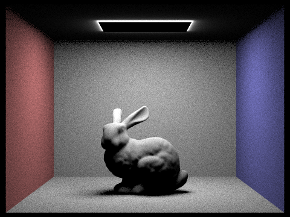
|
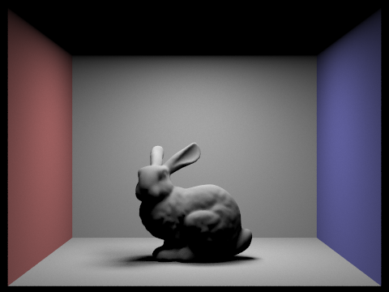
|
|
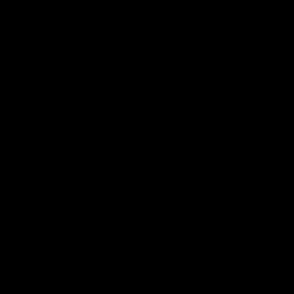
|
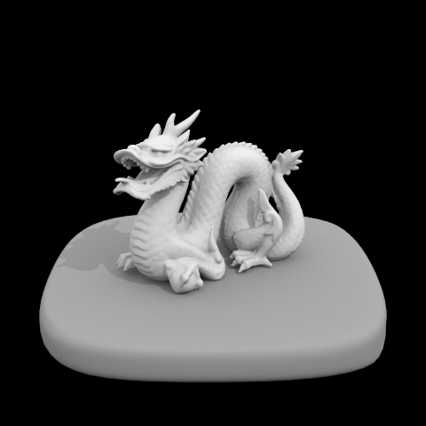
|
Comparing number of light rays
We use the CBspheres_lambertian.dae scene to render the images below with varying number of light rays from 1, 4, 16 and 64, and keep the number of samples per pixel to 1. We can see having more light rays allow for less noisy pictures.
|
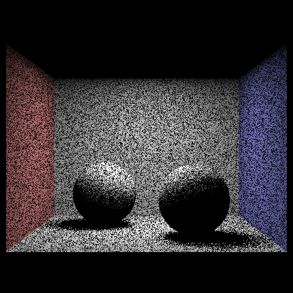
1 light ray. |
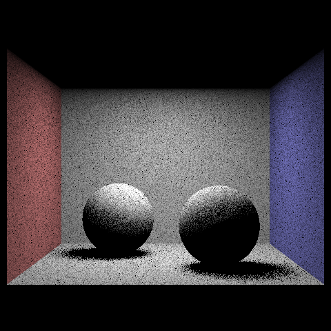
4 light rays. |
|
16 light rays. |
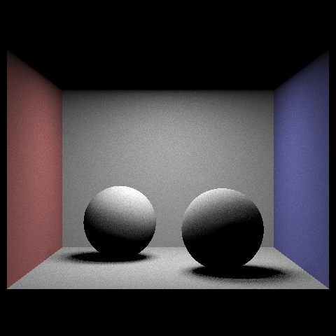
At least they aren't that noisy. 64 light rays. |
Part 4: Global Illumination
The indirect lighting function allows us to include bounced rays of light on shadowy areas. Previously, we
only looked at points that were in direct line of sight of the light sources. However, non-light sources also reflect light,
and these reflected light rays can light up areas otherwise not in line of sight to light sources.
Implementation details:
-
Using our importance and hemisphere lighting functions from part 3, we create a recursive function to simulate rays of light boucing around the scene.
- In zero_bounce_radiance, we take only the emission of the object itself. For non-light sources, this will be zero.
- In one_bounce_radiance, we use our direct lighting function to return samples for objects that are directly in line of sight of the light sources.
- In raytrace_pixel, we set the max depth of the ray to max_ray_depth. This allows us to limit the number of bounces the ray performs.
-
In at_least_one_bounce_radiance, we perform the following steps recursively:
- Calculate the hit point at which a ray hits an object.
- Convert the incoming ray direction to an outgoing direction.
- Get the radiance for one bounce of light at this point with one_bounce_radiance and get the intersection information.
- Sample the bsdf of the current hit point, as well as the pdf and get a sample of the incoming ray on the intersection
- If the max_ray_depth is 1 or 0, we can just return the radiance of one bounce.
- Else, we probabilistically perform a bounce with 0.7 chance of bouncing.
- Ensure that there is at least one bounce if we have max_ray_depth set to anything above 1 by checking the current ray's depth. If it is equal to the max_ray_depth, we perform a bounce anyway regardless of what the coinflip says.
- Convert the incoming ray to world space.
- Create a bounce ray in the direction of the incoming ray, and a ray depth of one less than the ray that was given as an argument.
- Check if the ray intersects with an object in the scene with bvh->intersect.
- If it does, we get the sample at that point by recursively calling at_least_one_bounce_radiance.
- Weight this sample by the bsdf found, the cosine of the incoming ray and the pdf, as well as the probability of not terminating.
- Add this to L_out and return it.
Comparing only direct illumination versus only indirect illumination
|
Lit by only direct lighting. |
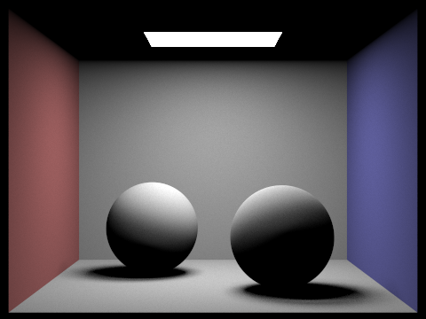
Also only direct lighting. |
|
|
|
CBbunny.dae max ray depth comparison
|
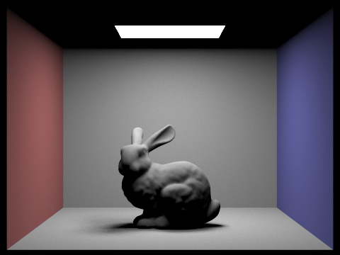
Depth of 0. |
Depth of 1. |
|
Depth of 2. |
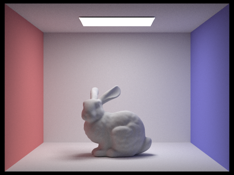
they aren't that noisy. Depth of 3. |
100 ray depth.
Part 5: Adaptive Sampling
Since we have implemented indirect lighting, we are able to bounce many rays and get semi-realistic lighting. However, for parts of a scene, sometimes the bounces of light are not needed as the subsequent rays do not significantly change the value of the irradiance on that point. As such, we turn to adapative sampling to check if the value has converged. Implementation details in raytrace_pixel:
- If we have multiple camera rays per pixel, we initialise a running sum of the illumination from est_radiance_global_illumination as illumSum or s1 in the spec.
- Initialise a square sum of illumination to calculate our variance in squaredIllumSum, or s2 as specified in the spec.
- Initialise a counter for the number of samples
- For every sample, we add the illumination and squared illumination to these variables. We also increment the number of samples taken by 1.
- Every samplesPerBatch number of samples, we calculate the mean and variable of the set of samples.
- Use these values to calculate the convergence value of the set of samples.
- If this convergence is less than or equal to the percentage tolerance of the mean, we break out of the loop.
- We set the number of samples to the sampleCountBuffer.
- Return the sum of samples averaged over the number of samples, rather than over the max of ns_aa.

CBbunny.dae with 4096 samples per pixel and depth of 5. |
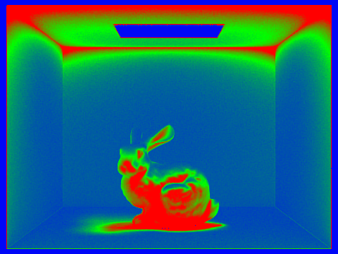
have more bounces. Like the bunny. |